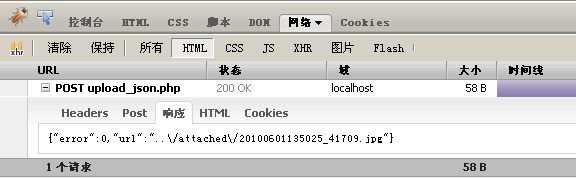

可以使用。有两种方法，一种方法是引入kindeditor.js文件时将script的charset属性设置成utf-8。
还有一种方法是直接将html/js/css文件编码都转换成GB2312编码（用Notepad++、editPlus等文本编辑器就可以转换编码），不过转换格式后升级比较困难，建议使用第一种方法。
<script charset="utf-8" src="/editor/kindeditor.js"></script>
这个需要理解KE.show和KE.create的区别。KE.show的原理是先执行KE.init设置一些变量，等DOM全部创建以后才开始执行KE.create创建编辑器。
如果浏览器不触发DOMContentLoaded事件（例如：点击某个按钮，通过innerHTML插入HTML等），则不能使用KE.show，需要直接调用KE.init和KE.create。
还有我发现很多同学直接把javascript代码放在ajax返回的HTML页面里执行，这么做可能出现不可预测的错误，最好的方法是ajax只返回纯HTML，返回成功后在该ajax方法的回调函数（callback function）里执行javascript。
//ajax请求之前执行KE.init
KE.init({
id : 'textarea_id'
});
//ajax返回HTML后执行KE.create创建编辑器
KE.create('textarea_id');
这是因为3.4版本以前编辑器默认开启了过滤模式（filterMode:true）。当filterMode为true时，编辑器会根据htmlTags设定自动过滤HTML代码，主要是为了生成干净的代码。
如果想保留所有HTML，请将filterMode设置成false。如果想保留特定HTML，请将filterMode设置成true后，配置htmlTags属性。
从3.4版本开始默认关闭过滤模式，所以要过滤HTML，需要将filterMode设置成true。
KE.show({
id : 'textarea_id',
filterMode : true // true:开启过滤模式, false:关闭过滤模式
});
KindEditor所有CSS选择器都用ke开头的名字，所以名字是不会直接冲突的，一般页面显示不正常的原因是你的页面使用了全局标签的CSS定义。
解决方式是为编辑器的div、table、td等标签重新设置一遍CSS。首先将skins/default.css文件放在你的CSS文件后面，default.css文件后面再定义一遍发生冲突的CSS。
<style>
/* 你的全局CSS定义 */
img {
border: 1px solid #555555;
padding: 10px;
}
</style>
<!-- 编辑器的CSS文件 -->
<link rel="stylesheet" type="text/css" href="./skins/default.css" />
<style>
/* 重新设置全局CSS定义 */
img {
border: 0;
padding: 0;
}
</style>
<!-- 通过style标签包含CSS时，需要将loadStyleMode属性设置成false -->
<script>
KE.show({
id : 'textarea_id',
loadStyleMode : false
});
</scirpt>
3.x版本的弹出框是用iframe加载HTML文件后显示的，跨域后2个document的域名不一样，无法进行跨页面js调用。正在开发中的4.0开始支持跨域调用，敬请期待。
KindEditor的可视化操作在新创建的iframe上执行，代码模式下的textarea框也是新创建的，所以最后提交前需要将HTML数据设置到原来的textarea，KE.sync函数会完成这个动作。
KindEditor在默认情况下自动寻找textarea所属的form元素，找到form后onsubmit事件里添加KE.sync函数，所以用form方式提交数据，不需要手动执行KE.sync函数。
//将编辑器的HTML数据设置到textarea，KE.sync是KE.util.setData的别名
KE.sync(id);
//KE.sync等价于以下代码
KE.g[id].srcTextarea.value = KE.html(id);
出现这个提示的根本原因是没有正确返回JSON数据。具体原因有很多，imageUploadJson参数设置错误，upload_json.xxx程序出错都会出现这个提示。
这时用Firefox的Firebug插件调试比较方便，上传图片后在Firebug的"网络" > "HTML"里能看到"POST upload_json.xxx"，正常情况下HTTP状态为200，并返回正确的JSON格式，如图所示。
